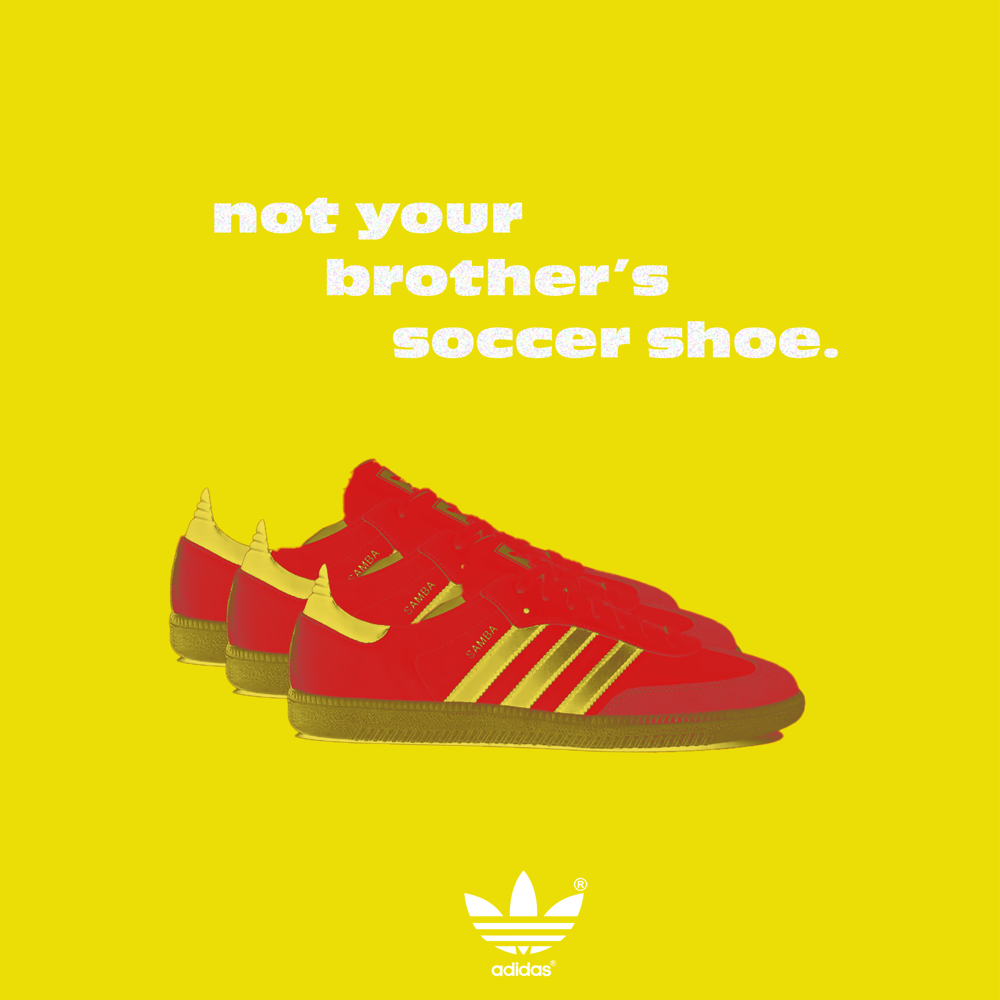

Footy shoes
I have always loved streetwear culture, and that love only grew when I came to New York City. I saw streetwear and personal style take a completely new light. I wanted to recognize this so I created a “vintage” ad of the Adidas, Sambas. The sambas are currently the ”it girl” shoe and for me sambas hold a much deeper meaning. I have grown up playing soccer and wearing indoor soccer shoes like sambas my whole life. So to see them be repurposed as a streetwear/style piece really felt full circle to me.
